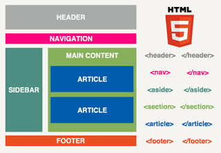

Etiquetas Sematicas
Las Etiquetas Semanticas son aquellas que indican que contenido contienen.
Un ejemplo mas claro de esta definicion es, el querer mostrar un dato u valor de una manera
resaltada o de manera especifica para que sea visible
Existen una amplia variedad de etiquetas sematicas, estan aquellas que definen la parte
principal de un documento como lo son HEADER, ARTICLE y FOOTER, que definen
el encabezado, el articulo u texto a desarrollar, y el pie de pagina o todo aquello que aparece
en ultima instancia.
Luego tenemos otras como hgroup, section, nav y aside, que permite marcar y agrupar, partes o
secciones de uno o mas elementos.

Miguel Angel Alvarez, M. A. (2012, 4 junio). Etiquetas Semanticas. desarrolloweb.com. https://desarrolloweb.com/articulos/etiquetas-semanticas-html5.html